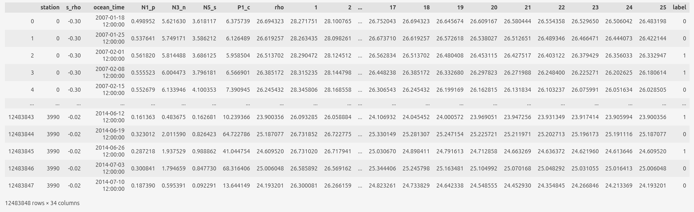
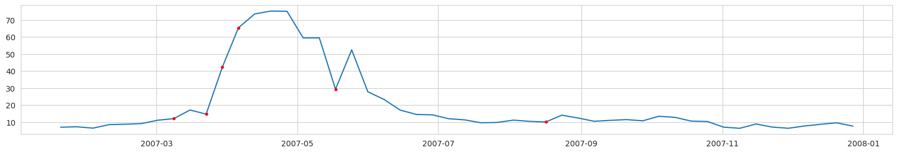
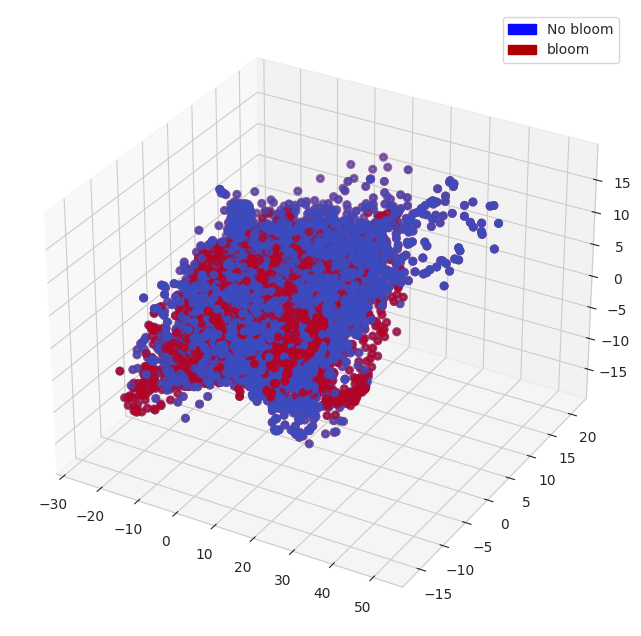
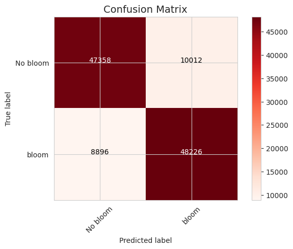
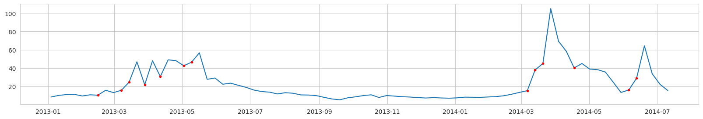
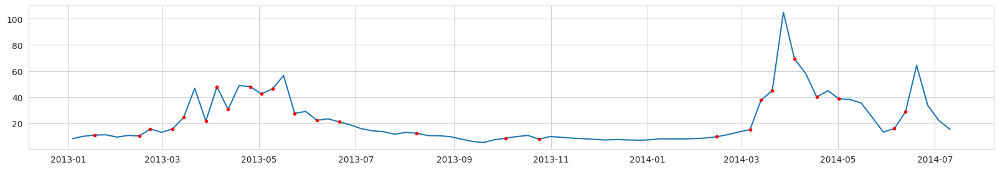
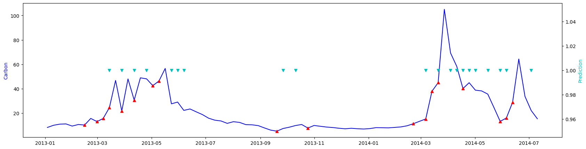

Modeled data¶
The idea is to take the modeled data and train a machine learning (ML) model on that data, then use it on the observational data. The reason - hydro-physical-biogeochemical models can’t predict the exact time and location of algal blooms very well, but they do reproduce the physics/biogeochemistry of it. Thus, the intuition to test is whether an ML model trained on modeled data can predict blooms on observational data. We train a neural network model to distinguish bloom events (label = 1) from all other conditions (label = 0).
Input data¶
We use the modeled data, which comes from the ROMS+NERSEM hydro-physical-biogeochemical model of the Hardangerfjord system (the western Norway around Bergen) and has weekly averages of plenty of seawater parameters. Input to the neural network model includes modeled nutrients (PO4, NO3, Si) and density profiles at various ROMS nodal points. We do not take more parameters to be closer to real observations that we can get from existing monitoring programs. The data span from 2007 to 2014.
Labeling¶
Labeling is based on future increases in diatoms carbon concentration. Label is 1 if ‘normalized next week carbon’ - ‘normalized current week carbon’ > 0.2. All other points are label = 0.
Example of input data and labels (before normalization):

For predictitons we use:
N1_p is PO4,
N3_n is NO3,
N5_s is Si
and density profiles (1 to 25 columns).
Labeling example, Diatoms Carbon concentration (mg/l) from a ROMS nodal point (station) during a modeled year:  Red dots - label = 1 (bloom is expected at the next time step).
NOTICE: the real task is to predict the point of the first bloom accurance. Unfortunately, if we label the data in this way, we will have too few points labeled as ‘bloom’. And after data balancing, there will be almost no data left.
Results¶
For principal component analysis and a decision tree classifier, we preprocess the modeled data as follows. Instead of snapshots, we use increments of variables for 1 and 2 consecutive periods. For example, for N5_s (Si), there are 2 data points on 2007-02-01:
a difference between 2007-01-18 and 2007-02-01;
a difference between 2007-01-25 and 2007-02-01.
Then we normalize all the data by column (time). Thus, each input data record / vector has 56 points / dimensions (2 x (PO4 + NO3 + Si + 25 density points)).
All data are balanced (equal number of points with label=0 and label=1). The data used for training and testing are separated temporaly. This is the best approach for autocorrelated (correlation over time) data. For testing, we use all data after 2013.
Principal Component Analysis (PCA)¶
PCA is a dimensionality reduction algorithm and it can help to understand / visualize the data structure. We project the observation vectors (of 56 dimensions) to 3 dimensions and visualize them. We also add bloom and no bloom tags to the vectors.

In the resulting subspace, blooms and no blooms are not linearly separable. But there are some ‘patches’ of bloom and no bloom vectors. This means that the distances between vectors in blooms / no blooms groups are smaller and groups can be separated in higher dimensional space.
Decision Tree classifier¶
Decision Trees is a powerful ‘classical’ ML method that is less prone to ‘overfitting’ compared to ‘deep ML’ methods. This type of algorithm is popular for classification tasks.

The confusion matrix shows that a decision tree classifier can handle a task. Wrong predictions are balanced. There are about the same number of false positives and true negatives.
True labels: 
Predictions: 
The accuracy of the decision tree classifier is about 60%, but the visual inspection of several stations shows that the actual task of predicting the first bloom accuracy is quite poor.
Deep Learning¶
We train a deep neural network to predict bloom and no bloom classes. To avoid overfitting, we use a small dense neural network with [70, 40, 70, 2] features.
We experimented with taking 1 time point and several of them (e.g. 3 points covering 3 weeks). We also experimented with using increments of parameters instead of their values. Using more time points is beneficial, and using increments instead of snapshot values slightly decreases performance (on the training set) but reduces overfitting (increases performance on the test set).
These are predictions for a ROMs nodal point from the test set: 
Blue line is carbon concentration (mg/l). Red triangles - are label=1. After them carbon concentration increases more or less significantly. Cyan triangles - predictions of label=1.
The overall accuracy on the test set is about 60% with quite a lot of false positives. But in general the neural net based classifier does the actual task of predicting first bloom better than the decision tree classifier.
Conclusions¶
Both the decision tree classifier and the neural network classifier that we trained on the modeled data can predict blooms. The accuracy on the balanced dataset (same amount of bloom and no bloom points, for the original dataset with many more no bloom points the accuracy may be better) is about 60-70%. We believe that it is possible to improve the prediction accuracy significantly. However, in order to continue working on this, it is necessary to test the algorithms on the observational data to be sure that they actually work properly. Unfortunately, we haven’t been able to get the observational data in a form similar to the modeled data (temperature and salinity profiles to calculate a density profile, and the corresponding nutrients at the surface).
During the project, we had difficulty retrieving data from the NIVA resources. We weren’t able to retrieve nutrients, temperature and salinity profile observations as a time series. First, the data is scattered through different databases and private sources. Then, similar variables have different names even within one data source, units of similar variables are also often different, making them uncomparable. To make the data usable, it is important to share the data and follow the standards.